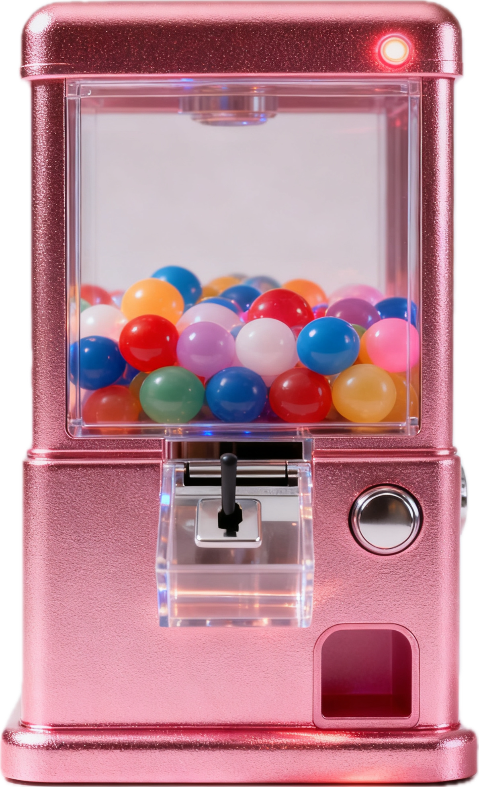

Anchor ⚓️v5.5
01 · 抽签装置（筛选 + 抽卡）
🔮 混合/全域
📖 只看书影
💿 只听唱片
🆘 SOS
...


命运转一转，看看今天的锚点…
起床起飞
📌 锚点 · ING...
正在进行中 · · ·
02 · 新任务入库
03 · 任务库 & 记录
🧺 日常 & 运动
(0)
今日高频的小事
🎞 媒体库房
(0)
书 / 电影 / 唱片 等
👣 今日足迹
(0)
仅保留当天记录
🏆 荣誉殿堂
(0)
只记录书 / 影 / 大工程
🧊 冷库 ( 0 )
暂时退场的任务，不会被抽到。需要时可以赦免回库或彻底删除。
要怎么处理这条任务？
📅 历史记录（最近 30 天）
这里会汇总最近一段时间的完成记录，仅在你想回顾时再展开查看。